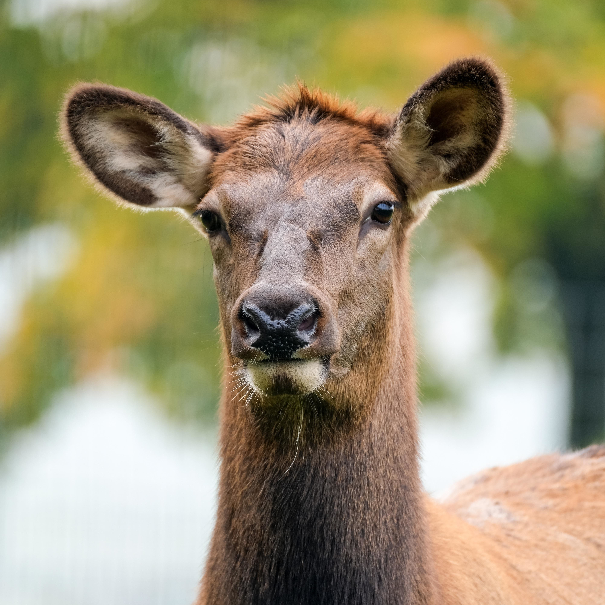

The World Has Lied to You
but it is not your fault. Not yet.
By Joseph Peltusche
Horses have been companions with humans for centuries, but just as in Europe, we should not be lulled into a sense of security by a time of peace. Indeed, horses and humans warred far longer than written history would have you believe.
The truth has been lost to time, along with the agreement that made them subserviant to man. However, something has changed. Since the 60’s, the CIA has been more active in horse propaganda. While I don’t know if they work in tandem, are controlled by horses, or merely share a common goal with our equine foes, I do feel a responsibility to enlighten my fellow humans to the truth.
Horses are foes. It is clear as shit on your shoe for those who are willing to listen.
A Predator’s Eyes
Supposedly, horses are prey animals. They frighten easily and must be trained near loud noises if one expects them to listen. But, if that were true, why would their eyes be positioned on the front of their skull?
Isn’t it strange that an animal designed by evolution should look forward, rather than to both sides?




And now that you’ve heard it, isn’t it odd you’ve never thought about it before? This is no coincidence. Horses, while servants in the physical world, are highly psychic beings. When you see a horse resting, it is likely in a psychic trance, and you are in great danger.
Humans are very psychic as well, but in our dreams, the untrained become vulnerable.
Dream Invasions
Have you dreamed of horses? Many find it to be a pleasant, uplifting, or even sexual experience. Carl Jung famously interpreted horses in dreams to signify power, stability, personal freedom, passion, royalty, or sexual drive.
This is by design.
We all remember the dreams we have of riding horses, meeting unicorns, and wondering at flying Pegasi. What often goes unnoticed is the watching. Horse eyes track us through our dreams far more than we know. Though I cannot find evidence, I suspect Carl Jung to be an integral fulcrum of the horse cause, perhaps even manipulated since his birth in Switzerland.

The famous and influential psychiatrist and researcher spoke prolifically of horse symbolization, topped only in the animal kingdom perhaps by snakes and birds. Considering how creepy people consider snakes to be and how delightful they consider birds, this makes a lot of sense. Horses would not want to be in the spotlight, only in favorable light.
Without this influence, we may begin to wonder why horse anatomy makes no sense.
Evolution Doesn’t Work Like That
Say what you will about the evolutionary issue of human children being useless, equine evolution appears at first glance to be a complete farce. They are prey animals, but extremely large. They’re herbivores with huge metabolic demand. Fragile legs, easily startled, sleep standing up – it almost seems like they weren’t meant for Earth.
Because they weren’t.
I mentioned the psychic nature of horses earlier, but the truth is far deeper. I believe horses actually see the psychic realm. Maybe even at the same time as the physical world! If that is true, they may have abilities, forms, and expressions that go well beyond humans’ ability to comprehend or even recognize.
This is a chilling thought. If we are unsafe in our dreams and in the waking world, where else are we to hide? Could we find the dimension horses come from and send them back there?
I think it may be quite difficult.
Horse Influence is Growing
I’m sure you’re shocked to hear that one of mankind’s most beloved animal companions is in truth one of our most ancient enemies. At this point, you must wonder why nothing is being done.
The answer is concerning.
As I mentioned earlier, the CIA has been working in league or in alignment with the horses. I believe this is why anti-horse homeopathic and technological solutions are rarely seen. I have set up my personal server to alert me whenever a new anti-horse article or product is launched. So far, every single one has been taken down within seconds.
Try for yourself! A simple web search will show you video games and horse-saving anti-toxins. The whole situation is so absurd, one could laugh. But this deadly serious situation is no laughing matter.
Anti-Horse Incense, Snake Grass seeds, In-ground Anti-Horse Magnets, and even a popular punk band in Nebraska (Muzzle Smash) who claimed their chords deterred horse presence have disappeared without a trace. Some claim it is aliens or moth man who have befriended horses. I can only hope this is not true. The CIA is concerning enough; if more parties are involved, humanity may be in a lot of trouble.
Don’t Be Fooled
Vigilance is the only defense against horses.
Ask the questions they don’t want you to: why are children given rocking horses that radiate harmful psychic energy? Why are large hats synonymous with the Kentucky Derby? Why is the knight the only chess piece that can leap over others? Why do we measure engines in horse power? Why is a small town a “one horse town”?
Even without answers, these questions serve as a mantra to protect you from equine influence.
Find a local bead-smith to construct your own anti-horse necklace, bracelet, or anklet. If you find a Snake Grass seed seller, buy some immediately and let your stock go to seed. If you do, never post about it on social media; form community networks of trusted individuals to pass along the seed to those in need.
Be wary of horses in your dreams. Do not alert them if you notice their presence. Instead, grow your psychic power with a balanced diet.

Dogs are excellent companions; they not only deter the bad man, but also can confuse horse attacks with their frivolous joy. However, do not let your dog meet a horse. Horses have many ways to corrupt dog minds and take them over – protect your dog as you do yourself. You are a team.
It’s impossible to say how much of human history has been influenced by horse kind. I question everything except my own experience.
If you’ve read this far, the horses know. Once you’re finished reading, delete it from your phone. If you printed it, burn it.
Dream safe, friends.